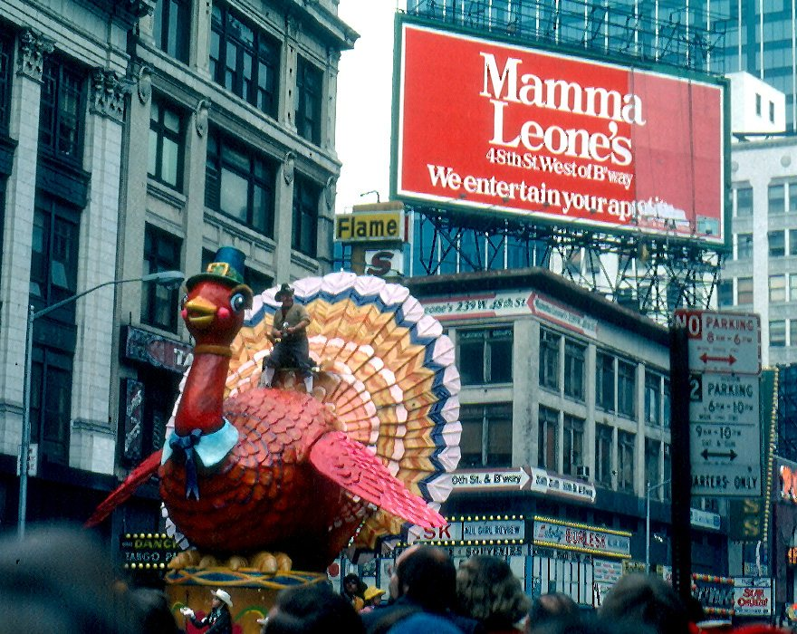

Loading the list.
Thanksgiving Parade Archive
A nor'easter pushed New York's 100th Thanksgiving Day Parade to Saturday at 8:30 a.m., the first time weather has ever moved it. NBC is filling Thursday morning with a rerun of last year's. That's fine, but there are 741 recordings here from 91 different parades, going back to 1927, and the old ones are probably better anyway.
Every recording of the parade we could find online, year by year: full TV broadcasts, newsreels, home movies and clips.
Loading the list.

If you want, please donate to Globe Santa. It is the Boston Globe Foundation's holiday gift program for children in need, and it has been at it since 1956.
Click a title and it plays here, on a TV from the right decade.
Loading the list.